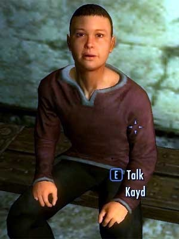
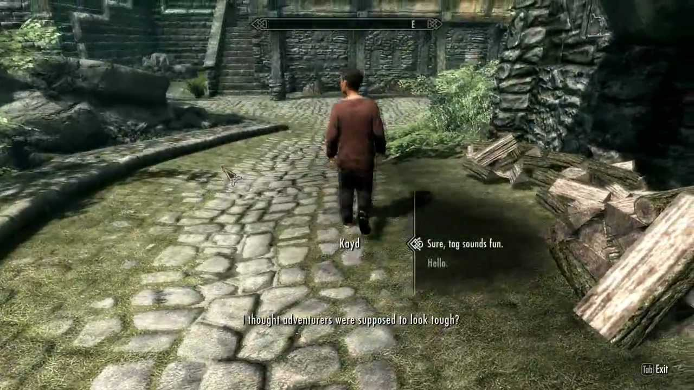

Като погледнете снимката може би се чудите защо дете заема второто място, нека ви обясни. Представете си, че току що сте попедели Алдуин, връщате се от Совенгард пълен с магически артефакти, който така или иначе не са достатъчно силни за вас и вашата даедрик броня. Решавате, че ще ги продавате. Отивате до най-близкият град, който се оказва Solitude, влизате в Bits & Pieces и това "Хлапе" на име Кайл ви посреща с думите "Мислех, че приключенците изглеждат корави".....
Болката е неописуема. За съжаление без модове или конзолни команди няма да успеете да свалите и косъм от главата на Кайл. Колкото и fireballa да може да кастнете отгоре му. Въпреки, че ако някак си успеете да го убиете, ще намерите бутилка Mead в инвентарът му. Пълен Хулиган ако питате мен. Или може би тово е референсе към South Park.
С времето установих, че най-добрият build в Скайрим е Школата за илюзия, защото след време научавете как да правите хора невидими. Подомни умение са особено полезни за хора като Кайл.
